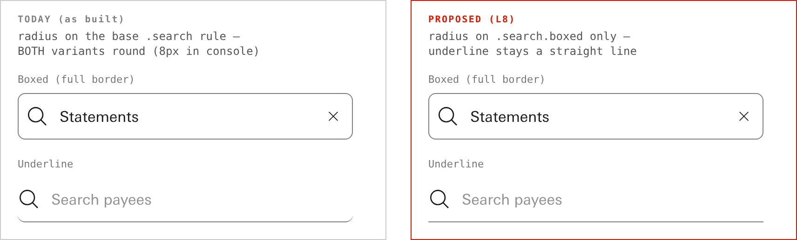
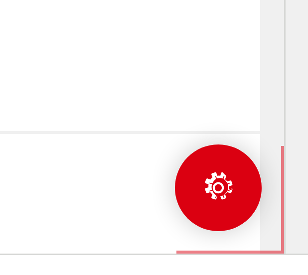
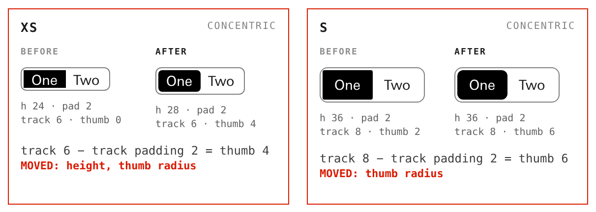
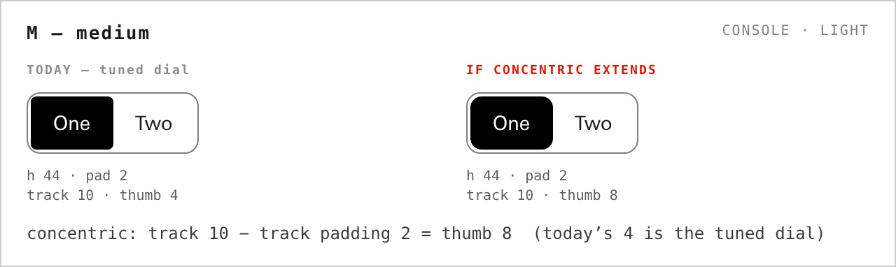
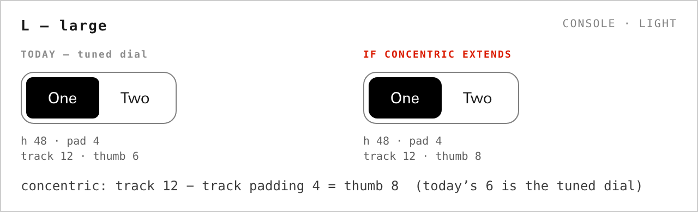

Apollo · session #227 · Monday confirmation pass
You answered all 44 cards and said you were not 100%. So nothing has been enacted. Below is the clean set — your answer restated in one line, with a picture of what it does. Wave it through, or flinch. A flinch moves it to discuss; it costs nothing.
Every line below is your answer, not a new proposal. If the line matches what you meant, press Confirm and move on.
One row disagrees with itself — row 7, in amber. You said two things about large that cannot both be true. It has three buttons instead of two.
Three rows are just for your information — rows 10, 11 and 12 have no buttons.
Copy the prompt at the bottom and paste it back. That paste is the only durable output. Your answers are saved in this browser, so a refresh is safe.
Apply the red team's 10 written contract edits.
You said: Apply × 10
Every one of these has the edit already written out. Applying them is transcription, not design. They are the Monday cut's apply-or-park set.
--root prints "NOT A DIRECTORY" instead of "3 of 3 hosts start COLD here".The token generator gets a real --check, and stops writing when you give it an unknown flag.
You said: Apply
Today, passing --check to gen_canon_tokens.py silently
rewrites canon.css. It was harmless when it happened — byte-identical — but a
checking flag that writes is the write-by-default class the help-gate exists to stop.
The search field's rounding moves to the boxed variant only. The underline variant stays a straight line.
You said: only the boxed one

Apollo Console · light · real canon.css. Left is today — look at the ends of the underline.
Two snippets, one declaration each, then a regenerate. Precedent runs the other way (Dropdown and Input-fields both round their underline constructions), so this is you overruling a precedent on the eye — which is exactly the sort of thing this pass is for.
The FAB is reading B — a hot corner. The zone is 72 px, and the button wears the canon settings icon.
You said: B · hot corner · settings icon

Reading B, pointer in the corner. The faint bracket is the 72 px zone; the 56 px button sits inside it.
data-corner="N". Put it in the box
if you want a different one.Console's small thumbs are right: xs thumb 4, s thumb 6.
You said: yes, they look right

Apollo Console · light · the built canon atom. BEFORE is git HEAD, AFTER is the working tree.
This is the one thing no gate could answer — the arithmetic was already proven. Nobody had seen a rendered pixel of it when you answered last night. Now you have.
Concentric extends to medium: its thumb goes from 4 to 8.
You said: concentric for m too

Apollo Console · light · throwaway mock, real canon atom. Nothing minted.
Your two changes met at medium: the padding dropped to 2, but concentric came back at xs and s only. So the dial now sits further from concentric at m than before you moved the padding. Extending is one constant and a re-mint.
You said two things about large that cannot both be true.
You said: "large stays" — and also "concentric for l too"

Apollo Console · light · throwaway mock, real canon atom. Left is what "large stays" means.
Three buttons here, not two. Nothing is assumed either way.
Rename the code key legacy to common — after Tuesday, as its own lane, and with the old key still working.
You said: reconcile them, but not this week
Designers read Common; the code says legacy. Every place the two
names meet today carries a parenthetical to reconcile them.
data-apollo-theme="legacy". If the new key simply replaced the old one, every page a
designer has already saved — and every page that ships in the pack — would lose its
theme the moment canon updated. With both keys live, nothing that exists breaks, and new work uses
the name you actually say out loud.Keep the chart-toolbar radius fix wide — all thirteen charts, not just the line chart.
You said: keep it wide
Apollo Console · light · the real chart toolbar. Copy data (CSV) and View as table are the two the fix touched.
Fixing only the line chart would have made one chart round and the other twelve square — a new inconsistency in place of an old one.
The four review pages get their store rows at the wrap. Nothing for you to do.
You said: yes, mint them — and it is the conductor's act, not yours
A document with no store row is invisible to every later retrieval. This page will want one too.
The five zero-inset toggles are not being decided here — two readings are being rendered for you to point at.
You said: show me both
Table, Template-dashboard, Template-list-index, Template-report and View-options each re-declare the segmented rule with no inset. Give them a 2 px inset and they become the same case as the six already repaired; or a zero-inset thumb gets minted. Both will be drawn, side by side, and you point.
CONDUCTOR — replace with the link when the page lands:
reviews/ZERO-INSET-READINGS-2026-08-31-v1.html (not yet published)
Where the repo stands this morning.
CONDUCTOR — fill after CI reads back:
push: <sha> · CI: <green | red, with the gate named> · read back at <time>
(placeholder — nothing here has been verified yet)
This is the only durable output. Rows with no button are not in it — they are information.